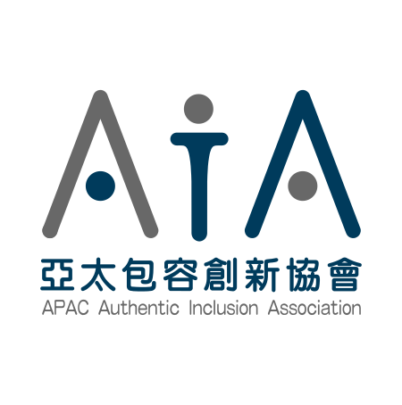
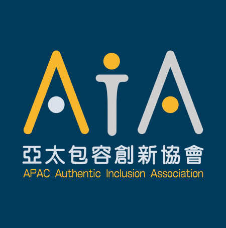

標誌規範
Logo Usage
主視覺 · 深色背景 Dark BG（footer / 深底 CTA）

直式 · 淺底 Vertical Light（垂直海報 / 側欄)
直式 · 深底 Vertical Dark（垂直海報 / 深底)
漸層 Gradient（特殊用途 · 網站避免使用）
標誌設計以三個「A」的幾何抽象圖形為核心，象徵 Asia-Pacific、Association、Access 三個關鍵字。
主視覺為淺色背景版（中英文雙語並陳），網站、文宣、簡報預設使用此版。深色背景版用於 footer 與深底 CTA。 其他 10 個變體（純中文 / 純英文 / 黑底 / 漸層 / 80K 90K 灰階 / 直式淺底等）見 hub repo 的
標誌周圍應保留不小於標誌高度 25% 的安全距離。
主視覺為淺色背景版（中英文雙語並陳），網站、文宣、簡報預設使用此版。深色背景版用於 footer 與深底 CTA。 其他 10 個變體（純中文 / 純英文 / 黑底 / 漸層 / 80K 90K 灰階 / 直式淺底等）見 hub repo 的
assets/logos/README.md，
或於設計師 Google Drive 516-logo-update/ 取得原始 SVG。標誌周圍應保留不小於標誌高度 25% 的安全距離。
色彩計畫
Color Palette
深海藍
Navy
#003B5C
主色 Primary
天際藍
Sky Blue
#19ABE4
副色 Secondary
暖陽金
Golden Yellow
#F8B62D
強調色 Accent
墨黑
Near Black
#231815
文字色 Text
雲白
Off White
#F7F8F8
背景色 Background
色彩語意：深海藍傳達信任與專業；天際藍代表科技與開放；暖陽金象徵包容與溫暖；墨黑確保閱讀清晰度；雲白用於背景留白，營造乾淨舒適的視覺空間。
◐ 深色模式預備 Dark Mode — Phase 2+
品牌已具備深色模式的視覺基礎（深色版 logo、深海藍漸層背景）。Phase 1 暫不實作，但建議未來擴展時依照以下對應規則：背景：#003B5C（深海藍）→ 取代 #F7F8F8（雲白）
主要文字：#F7F8F8（雲白）→ 取代 #231815（墨黑），對比度 11.09:1 ✅
標題強調：#F8B62D（暖陽金）→ 維持不變，對比度 6.58:1 ✅
連結 / 輔助：#19ABE4（天際藍）→ 在深色背景上對比度 4.49:1，僅限大字使用
Logo：自動切換為深色背景版 (aia-dark-bg.svg)
字型規範
Typography
以下為網頁字型的建議方向。三款皆為 Google Fonts 開源字型，免費、無授權疑慮，且支援 WCAG 2.2 AA 可讀性要求。
最終選擇請由設計師根據整體視覺風格做整合判斷。
中文標題 Heading
亞太包容創新協會
Noto Serif TC — Semi Bold (600)
可用字重：Light 300 · Regular 400 · Semi Bold 600 · Bold 700
中文內文 Body
讓每個人都能平等地參與數位世界
Noto Sans TC — Regular (400)
可用字重：Light 300 · Regular 400 · Medium 500 · Bold 700
英文字型 Latin — Heading & Body
Asia-Pacific Association for Inclusive Access
A B C D E F G H I J K L M N O P Q R S T U V W X Y Z
a b c d e f g h i j k l m n o p q r s t u v w x y z
0 1 2 3 4 5 6 7 8 9
a b c d e f g h i j k l m n o p q r s t u v w x y z
0 1 2 3 4 5 6 7 8 9
Inter — Regular (400)
可用字重：Light 300 · Regular 400 · Medium 500 · Semi Bold 600 · Bold 700
關於 Adobe Ming Std：標誌原始設計使用 Adobe Ming Std Light。此字型為 Adobe 專有字型，
不適合網頁環境使用，僅作為標誌識別的一部分保留。網站以 Noto Serif TC 作為中文標題替代方案，
Noto Sans TC 作為中文內文，Inter 作為英文字型。三者皆透過 Google Fonts CDN 載入，效能佳且無授權疑慮。
無障礙對比度
WCAG 2.1 Contrast Compliance
| 前景色 | 背景色 | 預覽 | 對比度 | AA 一般 | AA 大字 | 建議用途 |
|---|---|---|---|---|---|---|
| 深海藍 | 白色 | 文字範例 | 11.80 : 1 | ✅ 通過 | ✅ 通過 | 主要標題、內文 |
| 深海藍 | 雲白 | 文字範例 | 11.09 : 1 | ✅ 通過 | ✅ 通過 | 卡片標題、區塊標題 |
| 墨黑 | 白色 | 文字範例 | 17.31 : 1 | ✅ 通過 | ✅ 通過 | 內文段落 |
| 墨黑 | 暖陽金 | 文字範例 | 9.66 : 1 | ✅ 通過 | ✅ 通過 | 強調按鈕、CTA |
| 深海藍 | 暖陽金 | 文字範例 | 6.58 : 1 | ✅ 通過 | ✅ 通過 | 強調區塊標題 |
| 白色 | 深海藍 | 文字範例 | 11.80 : 1 | ✅ 通過 | ✅ 通過 | 深色區塊、頁首頁尾 |
| 天際藍 | 白色 | 文字範例 | 2.63 : 1 | ❌ 不通過 | ❌ 不通過 | ⚠️ 僅限裝飾用途，不可用於文字 |
| 暖陽金 | 白色 | 文字範例 | 1.79 : 1 | ❌ 不通過 | ❌ 不通過 | ⚠️ 僅限裝飾用途，不可用於文字。註(2026-05-17):現行 logo 主視覺(aia-logo-main.svg)已不在白底上使用暖陽金,改用 navy + 灰雙色組合(11.80:1 AAA + 5.57:1 AA)。 |
重要：天際藍 (#19ABE4) 與暖陽金 (#F8B62D) 在白色背景上的對比度不足，
不符合 WCAG 2.1 AA 標準。這兩色在白色背景上僅可用於裝飾性元素（圖示、邊框、背景色塊），
不可作為文字顏色。需要文字時，請搭配深海藍或墨黑為前景色。
使用規範
Usage Guidelines
建議做法
- 在淺色背景使用淺色版標誌
- 在深色背景使用深色版或漸層版標誌
- 標誌周圍保留足夠安全距離
- 深海藍或墨黑作為主要文字色
- 暖陽金用於 CTA 按鈕搭配深色文字
- 所有文字色彩組合須通過 WCAG AA
避免做法
- 不要在白色背景上使用天際藍文字
- 不要在白色背景上使用暖陽金文字
- 不要拉伸、旋轉或裁切標誌
- 不要更改標誌中的色彩
- 不要在複雜背景上直接疊放標誌
- 不要將標誌縮小至寬度低於 120px